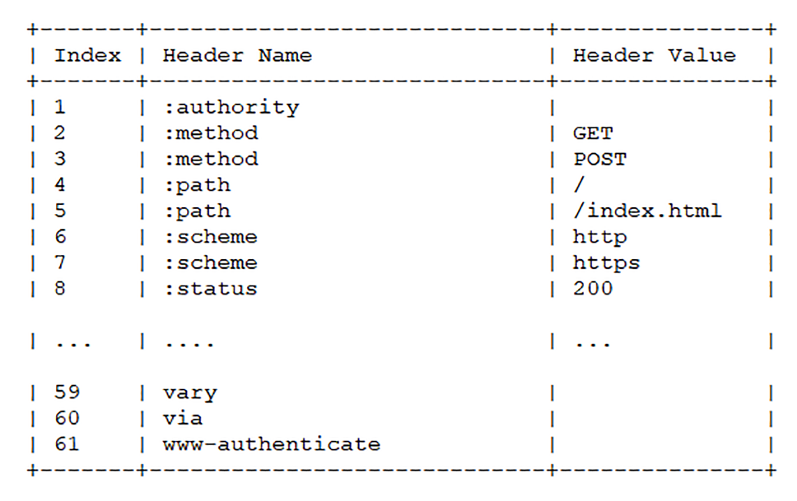
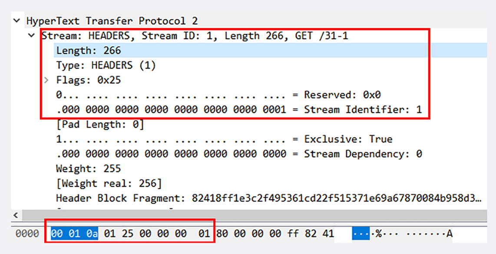
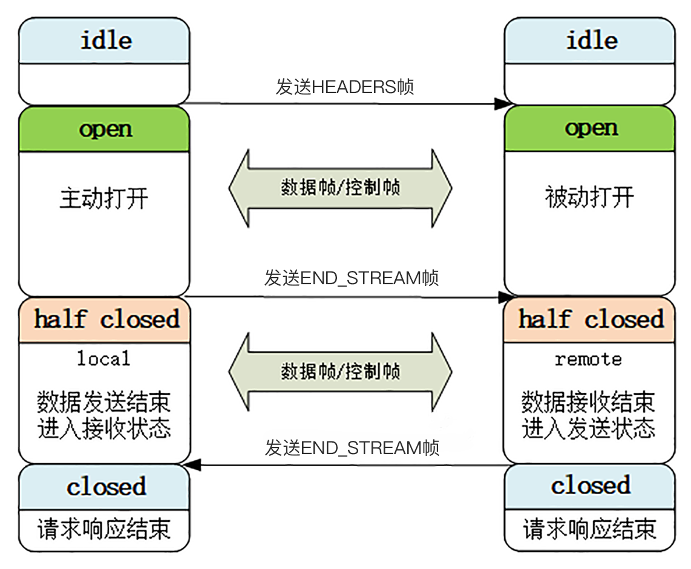

- 00 开篇词｜To Be a HTTP Hero.md.html
- 01 时势与英雄：HTTP的前世今生.md.html
- 02 HTTP是什么？HTTP又不是什么？.md.html
- 03 HTTP世界全览（上）：与HTTP相关的各种概念.md.html
- 04 HTTP世界全览（下）：与HTTP相关的各种协议.md.html
- 05 常说的“四层”和“七层”到底是什么？“五层”“六层”哪去了？.md.html
- 06 域名里有哪些门道？.md.html
- 07 自己动手，搭建HTTP实验环境.md.html
- 08 键入网址再按下回车，后面究竟发生了什么？.md.html
- 09 HTTP报文是什么样子的？.md.html
- 10 应该如何理解请求方法？.md.html
- 11 你能写出正确的网址吗？.md.html
- 12 响应状态码该怎么用？.md.html
- 13 HTTP有哪些特点？.md.html
- 14 HTTP有哪些优点？又有哪些缺点？.md.html
- 15 海纳百川：HTTP的实体数据.md.html
- 16 把大象装进冰箱：HTTP传输大文件的方法.md.html
- 17 排队也要讲效率：HTTP的连接管理.md.html
- 18 四通八达：HTTP的重定向和跳转.md.html
- 19 让我知道你是谁：HTTP的Cookie机制.md.html
- 20 生鲜速递：HTTP的缓存控制.md.html
- 21 良心中间商：HTTP的代理服务.md.html
- 22 冷链周转：HTTP的缓存代理.md.html
- 23 HTTPS是什么？SSLTLS又是什么？.md.html
- 24 固若金汤的根本（上）：对称加密与非对称加密.md.html
- 25 固若金汤的根本（下）：数字签名与证书.md.html
- 26 信任始于握手：TLS1.2连接过程解析.md.html
- 27 更好更快的握手：TLS1.3特性解析.md.html
- 28 连接太慢该怎么办：HTTPS的优化.md.html
- 29 我应该迁移到HTTPS吗？.md.html
- 30 时代之风（上）：HTTP2特性概览.md.html
- 31 时代之风（下）：HTTP2内核剖析.md.html
- 32 未来之路：HTTP3展望.md.html
- 33 我应该迁移到HTTP2吗？.md.html
- 34 Nginx：高性能的Web服务器.md.html
- 35 OpenResty：更灵活的Web服务器.md.html
- 36 WAF：保护我们的网络服务.md.html
- 37 CDN：加速我们的网络服务.md.html
- 38 WebSocket：沙盒里的TCP.md.html
- 39 HTTP性能优化面面观（上）.md.html
- 40 HTTP性能优化面面观（下）.md.html
- 结束语 做兴趣使然的Hero.md.html
- 捐赠
31 时代之风（下）：HTTP2内核剖析
今天我们继续上一讲的话题，深入 HTTP/2 协议的内部，看看它的实现细节。

这次实验环境的 URI 是“/31-1”，我用 Wireshark 把请求响应的过程抓包存了下来，文件放在 GitHub 的“wireshark”目录。今天我们就对照着抓包来实地讲解 HTTP/2 的头部压缩、二进制帧等特性。
连接前言
由于 HTTP/2“事实上”是基于 TLS，所以在正式收发数据之前，会有 TCP 握手和 TLS 握手，这两个步骤相信你一定已经很熟悉了，所以这里就略过去不再细说。
TLS 握手成功之后，客户端必须要发送一个“连接前言”（connection preface），用来确认建立 HTTP/2 连接。
这个“连接前言”是标准的 HTTP/1 请求报文，使用纯文本的 ASCII 码格式，请求方法是特别注册的一个关键字“PRI”，全文只有 24 个字节：
PRI * HTTP/2.0\r\n\r\nSM\r\n\r\n
在 Wireshark 里，HTTP/2 的“连接前言”被称为“Magic”，意思就是“不可知的魔法”。
所以，就不要问“为什么会是这样”了，只要服务器收到这个“有魔力的字符串”，就知道客户端在 TLS 上想要的是 HTTP/2 协议，而不是其他别的协议，后面就会都使用 HTTP/2 的数据格式。
头部压缩
确立了连接之后，HTTP/2 就开始准备请求报文。
因为语义上它与 HTTP/1 兼容，所以报文还是由“Header+Body”构成的，但在请求发送前，必须要用“HPACK”算法来压缩头部数据。
“HPACK”算法是专门为压缩 HTTP 头部定制的算法，与 gzip、zlib 等压缩算法不同，它是一个“有状态”的算法，需要客户端和服务器各自维护一份“索引表”，也可以说是“字典”（这有点类似 brotli），压缩和解压缩就是查表和更新表的操作。
为了方便管理和压缩，HTTP/2 废除了原有的起始行概念，把起始行里面的请求方法、URI、状态码等统一转换成了头字段的形式，并且给这些“不是头字段的头字段”起了个特别的名字——“伪头字段”（pseudo-header fields）。而起始行里的版本号和错误原因短语因为没什么大用，顺便也给废除了。
为了与“真头字段”区分开来，这些“伪头字段”会在名字前加一个“:”，比如“:authority” “:method” “:status”，分别表示的是域名、请求方法和状态码。
现在 HTTP 报文头就简单了，全都是“Key-Value”形式的字段，于是 HTTP/2 就为一些最常用的头字段定义了一个只读的“静态表”（Static Table）。
下面的这个表格列出了“静态表”的一部分，这样只要查表就可以知道字段名和对应的值，比如数字“2”代表“GET”，数字“8”代表状态码 200。

但如果表里只有 Key 没有 Value，或者是自定义字段根本找不到该怎么办呢？
这就要用到“动态表”（Dynamic Table），它添加在静态表后面，结构相同，但会在编码解码的时候随时更新。
比如说，第一次发送请求时的“user-agent”字段长是一百多个字节，用哈夫曼压缩编码发送之后，客户端和服务器都更新自己的动态表，添加一个新的索引号“65”。那么下一次发送的时候就不用再重复发那么多字节了，只要用一个字节发送编号就好。

你可以想象得出来，随着在 HTTP/2 连接上发送的报文越来越多，两边的“字典”也会越来越丰富，最终每次的头部字段都会变成一两个字节的代码，原来上千字节的头用几十个字节就可以表示了，压缩效果比 gzip 要好得多。
二进制帧
头部数据压缩之后，HTTP/2 就要把报文拆成二进制的帧准备发送。
HTTP/2 的帧结构有点类似 TCP 的段或者 TLS 里的记录，但报头很小，只有 9 字节，非常地节省（可以对比一下 TCP 头，它最少是 20 个字节）。
二进制的格式也保证了不会有歧义，而且使用位运算能够非常简单高效地解析。

帧开头是 3 个字节的长度（但不包括头的 9 个字节），默认上限是 2^14，最大是 2^24，也就是说 HTTP/2 的帧通常不超过 16K，最大是 16M。
长度后面的一个字节是帧类型，大致可以分成数据帧和控制帧两类，HEADERS 帧和 DATA 帧属于数据帧，存放的是 HTTP 报文，而 SETTINGS、PING、PRIORITY 等则是用来管理流的控制帧。
HTTP/2 总共定义了 10 种类型的帧，但一个字节可以表示最多 256 种，所以也允许在标准之外定义其他类型实现功能扩展。这就有点像 TLS 里扩展协议的意思了，比如 Google 的 gRPC 就利用了这个特点，定义了几种自用的新帧类型。
第 5 个字节是非常重要的帧标志信息，可以保存 8 个标志位，携带简单的控制信息。常用的标志位有END_HEADERS表示头数据结束，相当于 HTTP/1 里头后的空行（“\r\n”），END_STREAM表示单方向数据发送结束（即 EOS，End of Stream），相当于 HTTP/1 里 Chunked 分块结束标志（“0\r\n\r\n”）。
报文头里最后 4 个字节是流标识符，也就是帧所属的“流”，接收方使用它就可以从乱序的帧里识别出具有相同流 ID 的帧序列，按顺序组装起来就实现了虚拟的“流”。
流标识符虽然有 4 个字节，但最高位被保留不用，所以只有 31 位可以使用，也就是说，流标识符的上限是 2^31，大约是 21 亿。
好了，把二进制头理清楚后，我们来看一下 Wireshark 抓包的帧实例：

在这个帧里，开头的三个字节是“00010a”，表示数据长度是 266 字节。
帧类型是 1，表示 HEADERS 帧，负载（payload）里面存放的是被 HPACK 算法压缩的头部信息。
标志位是 0x25，转换成二进制有 3 个位被置 1。PRIORITY 表示设置了流的优先级，END_HEADERS 表示这一个帧就是完整的头数据，END_STREAM 表示单方向数据发送结束，后续再不会有数据帧（即请求报文完毕，不会再有 DATA 帧 /Body 数据）。
最后 4 个字节的流标识符是整数 1，表示这是客户端发起的第一个流，后面的响应数据帧也会是这个 ID，也就是说在 stream[1] 里完成这个请求响应。
流与多路复用
弄清楚了帧结构后我们就来看 HTTP/2 的流与多路复用，它是 HTTP/2 最核心的部分。
在上一讲里我简单介绍了流的概念，不知道你“悟”得怎么样了？这里我再重复一遍：流是二进制帧的双向传输序列。
要搞明白流，关键是要理解帧头里的流 ID。
在 HTTP/2 连接上，虽然帧是乱序收发的，但只要它们都拥有相同的流 ID，就都属于一个流，而且在这个流里帧不是无序的，而是有着严格的先后顺序。
比如在这次的 Wireshark 抓包里，就有“0、1、3”一共三个流，实际上就是分配了三个流 ID 号，把这些帧按编号分组，再排一下队，就成了流。

在概念上，一个 HTTP/2 的流就等同于一个 HTTP/1 里的“请求 - 应答”。在 HTTP/1 里一个“请求 - 响应”报文来回是一次 HTTP 通信，在 HTTP/2 里一个流也承载了相同的功能。
你还可以对照着 TCP 来理解。TCP 运行在 IP 之上，其实从 MAC 层、IP 层的角度来看，TCP 的“连接”概念也是“虚拟”的。但从功能上看，无论是 HTTP/2 的流，还是 TCP 的连接，都是实际存在的，所以你以后大可不必再纠结于流的“虚拟”性，把它当做是一个真实存在的实体来理解就好。
HTTP/2 的流有哪些特点呢？我给你简单列了一下：
- 流是可并发的，一个 HTTP/2 连接上可以同时发出多个流传输数据，也就是并发多请求，实现“多路复用”；
- 客户端和服务器都可以创建流，双方互不干扰；
- 流是双向的，一个流里面客户端和服务器都可以发送或接收数据帧，也就是一个“请求 - 应答”来回；
- 流之间没有固定关系，彼此独立，但流内部的帧是有严格顺序的；
- 流可以设置优先级，让服务器优先处理，比如先传 HTML/CSS，后传图片，优化用户体验；
- 流 ID 不能重用，只能顺序递增，客户端发起的 ID 是奇数，服务器端发起的 ID 是偶数；
- 在流上发送“RST_STREAM”帧可以随时终止流，取消接收或发送；
- 第 0 号流比较特殊，不能关闭，也不能发送数据帧，只能发送控制帧，用于流量控制。
这里我又画了一张图，把上次的图略改了一下，显示了连接中无序的帧是如何依据流 ID 重组成流的。
从这些特性中，我们还可以推理出一些深层次的知识点。
比如说，HTTP/2 在一个连接上使用多个流收发数据，那么它本身默认就会是长连接，所以永远不需要“Connection”头字段（keepalive 或 close）。
你可以再看一下 Wireshark 的抓包，里面发送了两个请求“/31-1”和“/favicon.ico”，始终用的是“56095<->8443”这个连接，对比一下[第 8 讲]，你就能够看出差异了。
又比如，下载大文件的时候想取消接收，在 HTTP/1 里只能断开 TCP 连接重新“三次握手”，成本很高，而在 HTTP/2 里就可以简单地发送一个“RST_STREAM”中断流，而长连接会继续保持。
再比如，因为客户端和服务器两端都可以创建流，而流 ID 有奇数偶数和上限的区分，所以大多数的流 ID 都会是奇数，而且客户端在一个连接里最多只能发出 2^30，也就是 10 亿个请求。
所以就要问了：ID 用完了该怎么办呢？这个时候可以再发一个控制帧“GOAWAY”，真正关闭 TCP 连接。
流状态转换
流很重要，也很复杂。为了更好地描述运行机制，HTTP/2 借鉴了 TCP，根据帧的标志位实现流状态转换。当然，这些状态也是虚拟的，只是为了辅助理解。
HTTP/2 的流也有一个状态转换图，虽然比 TCP 要简单一点，但也不那么好懂，所以今天我只画了一个简化的图，对应到一个标准的 HTTP“请求 - 应答”。

最开始的时候流都是“空闲”（idle）状态，也就是“不存在”，可以理解成是待分配的“号段资源”。
当客户端发送 HEADERS 帧后，有了流 ID，流就进入了“打开”状态，两端都可以收发数据，然后客户端发送一个带“END_STREAM”标志位的帧，流就进入了“半关闭”状态。
这个“半关闭”状态很重要，意味着客户端的请求数据已经发送完了，需要接受响应数据，而服务器端也知道请求数据接收完毕，之后就要内部处理，再发送响应数据。
响应数据发完了之后，也要带上“END_STREAM”标志位，表示数据发送完毕，这样流两端就都进入了“关闭”状态，流就结束了。
刚才也说过，流 ID 不能重用，所以流的生命周期就是 HTTP/1 里的一次完整的“请求 - 应答”，流关闭就是一次通信结束。
下一次再发请求就要开一个新流（而不是新连接），流 ID 不断增加，直到到达上限，发送“GOAWAY”帧开一个新的 TCP 连接，流 ID 就又可以重头计数。
你再看看这张图，是不是和 HTTP/1 里的标准“请求 - 应答”过程很像，只不过这是发生在虚拟的“流”上，而不是实际的 TCP 连接，又因为流可以并发，所以 HTTP/2 就可以实现无阻塞的多路复用。
小结
HTTP/2 的内容实在是太多了，为了方便学习，我砍掉了一些特性，比如流的优先级、依赖关系、流量控制等。
但只要你掌握了今天的这些内容，以后再看 RFC 文档都不会有难度了。
- HTTP/2 必须先发送一个“连接前言”字符串，然后才能建立正式连接；
- HTTP/2 废除了起始行，统一使用头字段，在两端维护字段“Key-Value”的索引表，使用“HPACK”算法压缩头部；
- HTTP/2 把报文切分为多种类型的二进制帧，报头里最重要的字段是流标识符，标记帧属于哪个流；
- 流是 HTTP/2 虚拟的概念，是帧的双向传输序列，相当于 HTTP/1 里的一次“请求 - 应答”；
- 在一个 HTTP/2 连接上可以并发多个流，也就是多个“请求 - 响应”报文，这就是“多路复用”。
课下作业
- HTTP/2 的动态表维护、流状态转换很复杂，你认为 HTTP/2 还是“无状态”的吗？
- HTTP/2 的帧最大可以达到 16M，你觉得大帧好还是小帧好？
- 结合这两讲，谈谈 HTTP/2 是如何解决“队头阻塞”问题的。
欢迎你把自己的学习体会写在留言区，与我和其他同学一起讨论。如果你觉得有所收获，也欢迎把文章分享给你的朋友。

© 2019 - 2023 Liangliang Lee. Powered by gin and hexo-theme-book.